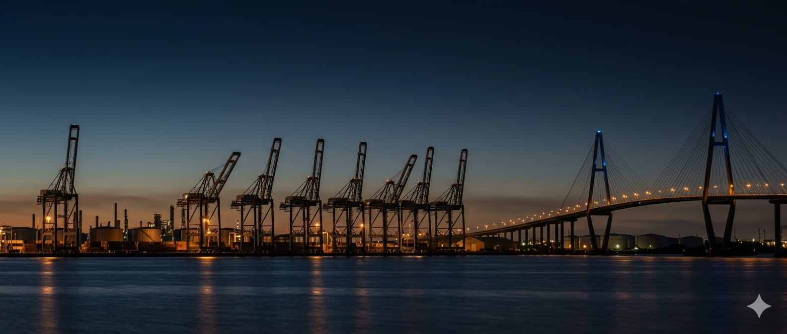
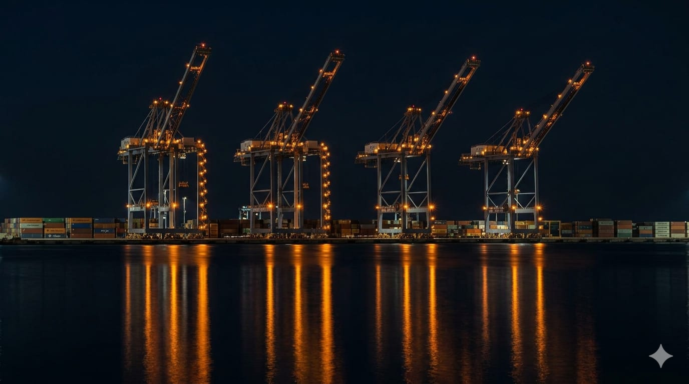
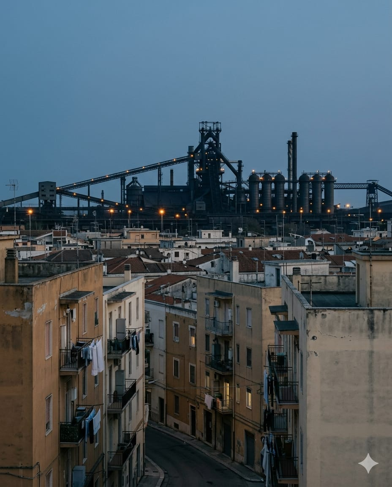
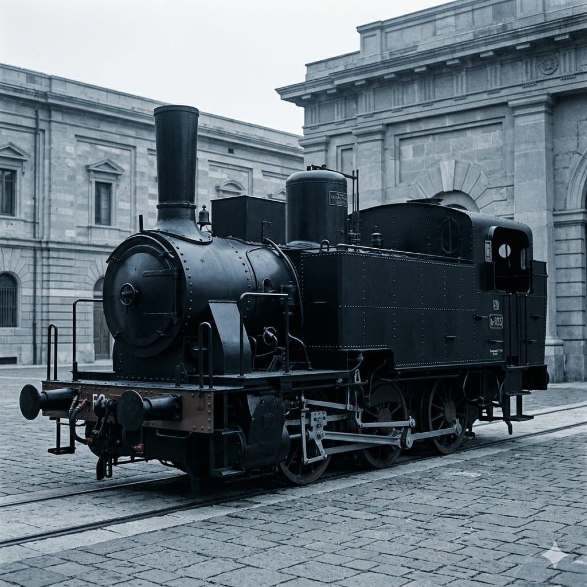

Berlino non ha nascosto la sua storia industriale: l'ha resa attraente. Taranto può fare lo stesso — senza spendere quello che Berlino ha speso.
Taranto è una città costruita attorno al ferro. Per sessant'anni questa identità è stata vissuta come condanna. Ma lo skyline industriale — ciminiere, altiforni, nastri, gru portuali, il reticolo di tubi di Punta Penna — è un paesaggio di intensità visiva rara in Europa.
È la lingua visiva del cinema industriale, della fotografia sociale del Novecento, dei videogame steampunk, delle estetiche post-industriali dei social contemporanei. Nessuno ha mai trasformato questa identità in un prodotto turistico organizzato. La città la subisce o la rimuove. Taranto Iron Skyline propone di attraversarla.
Non un museo. Non una sagra di un fine settimana. Un percorso esperienziale che il turista scarica sul telefono in aeroporto a Brindisi e segue per tre giorni.
Castello Aragonese → ingresso Arsenale (via D'Aquino/Di Palma) → Ponte Girevole → banchine del porto mercantile. La porta d'ingresso al sistema.
Rione Tamburi → belvedere sull'ILVA (in accordo con Acciaierie d'Italia e Prefettura) → discesa verso Porta Napoli e la sua rinascita. Il cuore emotivo del percorso.
Punta Penna → ponte di Punta Penna → raffineria dal lungomare. Il loop "Blade Runner": il contenuto visivo ad alto impatto social. Gancio per Gen Z e fotografi.
Audio di 2–4 minuti, contenuto musicale suggerito, punto fotografico indicato. Questo è l'elenco di avvio. Il percorso è espandibile.


Nel 2024 Kid Yugi, rapper di Massafra, ha pubblicato su Red Bull 64 Bars uno dei contenuti rap italiani più visti e discussi dell'anno. Il suo immaginario — dialetto, quartieri, la ferita dell'ILVA, la "collina" dei Tamburi — ha fatto per Taranto quello che Gomorra fece per Scampia: l'ha resa riconoscibile dentro un immaginario pop contemporaneo.
Red Bull 64 Bars è un format nato per portare il rap nei luoghi, non sul palco. Il Live 2024 a Scampia, davanti alle Vele, ha raccolto 10.000 persone. Una tappa a Taranto — su una banchina del porto con skyline ILVA — chiuderebbe il cerchio narrativo.
In 5 tappe selezionate, i QR code rimandano ai brani di Kid Yugi, Massimo Pericolo, Fido Guido che hanno già cantato l'ILVA. Il turista ascolta "Ilva" o "Lucifero" esattamente nel punto che quei brani raccontano. Zero produzione, massimo impatto.
Candidatura ufficiale a Red Bull Italia per una tappa Live in scenario industriale. Red Bull produce tutto: artisti, impianti, comunicazione nazionale. Il Comune fornisce luogo, patrocinio, autorizzazioni, sicurezza. Zero esborso, massima cassa di risonanza.

Prelevata nel 2007 in condizioni disperate, restaurata nel Deposito Locomotive di Taranto, tornata in Arsenale nel 2021. Percorreva la ferrovia di servizio del Mar Piccolo fino a Buffoluto.
È il simbolo perfetto del protocollo Marina: patrimonio preesistente, già aperto al pubblico durante le Giornate FAI e la Giornata del Mare, semplicemente da inserire in un unico brand di comunicazione.
L'Arsenale Militare Marittimo è il soggetto istituzionale che meglio di chiunque altro coniuga a Taranto ferro, memoria, accesso controllato e apertura al pubblico.
Il Mo.S.A. è aperto gratuitamente con visite guidate dal lunedì al venerdì su prenotazione. Durante le Giornate FAI e la Giornata del Mare aprono ulteriori aree: bunker antiaereo, sala a tracciare, la locomotiva storica Gr 835 327, bacino Benedetto Brin. Esiste la Scuola Sommergibili con simulatori.
Il protocollo proposto non chiede nuove aperture: coordina quelle esistenti dentro un unico brand, un'unica mappa, una sola piattaforma digitale. La Marina guadagna visibilità; il percorso guadagna un ancoraggio istituzionale fortissimo. Entrambi a costo zero.
Zero padiglioni, zero totem, zero cartellonistica costosa. Solo adesivi QR resistenti agli agenti atmosferici, posati su pali pubblici già esistenti. Costo massimo: 100 € per 100 punti.
La musica non viene diffusa nei luoghi: i luoghi rimandano a Spotify, il turista ascolta nei propri auricolari. L'infrastruttura audio è a carico dei dispositivi dei visitatori.
Piattaforme gratuite: izi.TRAVEL (audioguide georeferenziate), Spotify, Google My Maps, YouTube. Le stesse usate da centinaia di musei e città europee.
Si attingono materiali già esistenti: fotografie di Vito Leone, interviste agli operai, documentari RAI/RaiPlay, articoli Treccani, testi Marina Militare, brani su Spotify.
Le guide sono volontari (modello FAI già attivo), studenti universitari in tirocinio (UniBa, UniSalento), associazioni locali già operanti sul territorio.
Voci narranti: studenti di comunicazione UniBa (project work), volontari FAI, artisti del territorio a titolo gratuito. Prima chiamata naturale: Kid Yugi per la tappa Tamburi.
Idea della mappa condivisa pubblica. Le 12 tappe, i tre loop con colori distinti, percorsi a piedi/bici/auto precalcolati. Realizzazione: mezza giornata di un dipendente comunale.
Una colonna sonora del percorso. Rap tarantino che ha raccontato l'ILVA, elettronica industriale internazionale figlia del mondo delle fabbriche, classici italiani che hanno cantato il ferro e la polvere. Curata e pubblicata dal Comune di Taranto.
Stampa 100 sticker resistenti · costo totale: ≤ 100 €